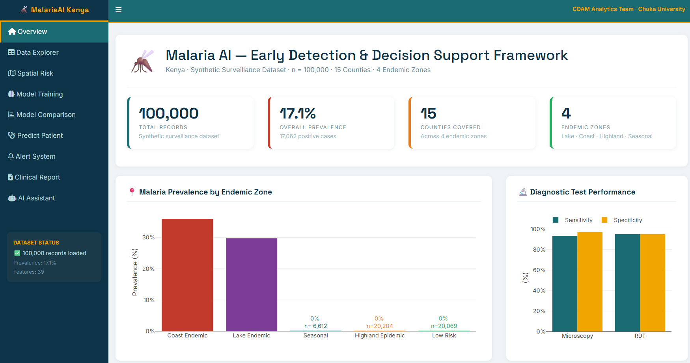
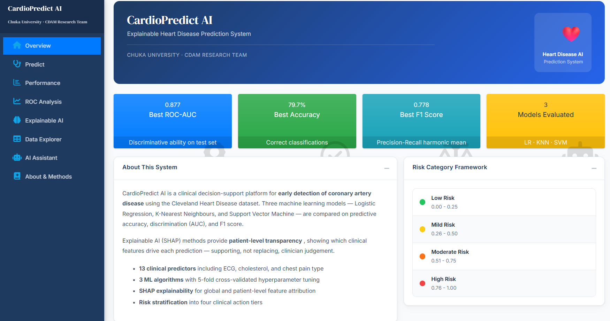
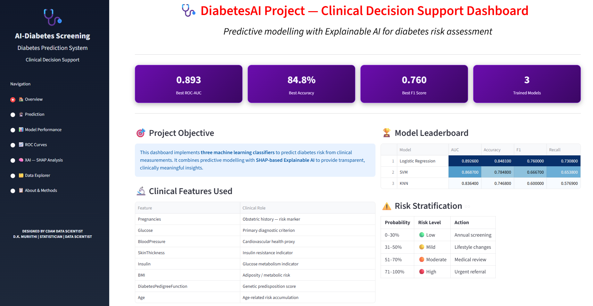

Dennis K. Muriithi
Associate Professor of Applied Statistics and Lead Data Scientist at the Center for Data Analytics & Modeling, Chuka University. I build explainable machine-learning systems — malaria, cardiovascular and diabetes risk models — that turn clinical and public-health data into decisions people can act on.
Statistics, applied to what matters
I hold a PhD in Biostatistics from Moi University and an MSc in Applied Statistics from JKUAT. Since October 2023 I have served as Associate Professor of Applied Statistics at Chuka University, where I coordinate the PhD programme in Applied Statistics and lead the Center for Data Analytics & Modeling (CDAM) — a research hub I built to bridge statistical theory and deployable machine learning.
My work sits at the intersection of applied statistics, machine learning and AI integration, with recurring applications in healthcare, agriculture, education and social sciences. In practice, that means comparing classical statistical models against ML classifiers, then wrapping the winner in explainable-AI tooling — SHAP attributions, risk-stratification tiers, and conversational assistants — so the output is legible to a clinician or policymaker, not just a data scientist.
Before academia, I trained as a Certified Public Accountant (CPA-K), which still shapes how I think about grant budgets, reproducibility and audit trails in research. I currently serve as an ACU Ambassador for the Association of Commonwealth Universities and as a member of the International Biometric Society and the Applied Malaria Modeling Network (AMMnet).
What I'm building toward: a small but growing library of open, explainable clinical decision-support dashboards — for malaria, cardiovascular disease and diabetes so far — designed specifically for resource-constrained health settings in Kenya and the wider region.
Skills & instruments
The statistical foundation and the applied ML stack I use to move from raw data to a dashboard a clinician can trust.
Statistical analysis
ML & explainable AI
Applied delivery
Generative AI
Research & supervision
Tools & workflow
Experience
- Teach and evaluate undergraduate and postgraduate students; set, moderate and mark examinations.
- Supervise undergraduate and postgraduate research; coordinate the PhD programme in Applied Statistics.
- Develop funded research proposals and lead CDAM's applied ML research agenda.
Education & credentials
PhD, Biostatistics
Moi University, Eldoret, Kenya
MSc, Applied Statistics
Jomo Kenyatta University of Agriculture and Technology (JKUAT), Nairobi, Kenya
Certified Public Accountant (CPA-K)
KASNEB, Nairobi, Kenya
BSc (Honours)
Egerton University, Nakuru, Kenya
Grants & selected publications
A sample of active research funding and recent peer-reviewed output across malaria modeling, explainable AI, mental health and agricultural statistics.
Research & travel grants
| Grant | Role | Period | Value |
|---|---|---|---|
| AMMnet Travel Grant Award - Annual AMMnet meeting/training held in Dakar, Senegal, June 25-27, Basics: Introduction to R and data visualization | Trainer | 2025 | Full air ticket & accommodation |
| AMMnet — Malaria Risk Prediction in Kenya using AI & ML in R | Lead Applicant | 2025 | $3,000 |
| AMMnet — Training Workshop on Malaria Modeling Software | Lead Applicant | 2024 | $3,000 |
| CU Support Project — CDAM short courses, consultancy & research hub | Project Lead | 2024 | Internally Funded |
| Full Scholarship — Food Systems Resilience Project (3 PhD, 2 MSc) | Supervisor | 2023 – 2029 | Full sponsorship |
| TU Internal Grant — Biodiesel & Glycerol from Mango Seed Oil (RSM) | Co-Principal Investigator | 2023 – 2025 | KShs 200,000 |
| CU Internal Grant — Cucumber growth parameters & yield (RSM/CCD) | Principal Investigator | 2022 – 2024 | KShs 700,000 |
| Full Scholarship — Kenya Climate Smart Agriculture Project (KCSAP) | Supervisor | 2019 – 2023 | Full sponsorship |
| CU Internal Grant — Watermelon response to organic manure (RSM) | Principal Investigator | 2016 – 2017 | KShs 200,000 |
Selected publications
-
[01]
Explainable Artificial Intelligence for Predicting Malaria Risk in Kenya
-
[02]
Evaluating the Performance of Selected Single Classifiers with Incorporated Explainable AI (XAI) in the Prediction of Mental Health Distress Among University Students
-
[03]
Factors Associated with Psychological Distress in Mothers and Girls in Kenya: A Baseline Analysis
-
[04]
A Machine Learning-Based Prediction of Malaria Occurrence in Kenya
-
[05]
Forecasting Outpatient Visits at Marimanti Level 4 Hospital: Time Series Analysis Using Sarima Model
-
[06]
Analyzing the Determinants and Extent of Crop Diversification Among Smallholder Coffee Farmers in Kirinyaga County, Kenya
52 total publications in internationally refereed journals. Full list available on Google Scholar.
Achievements at a glance
Featured projects
Explainable clinical decision-support dashboards, built end-to-end from dataset to deployed application, for CDAM's public-health research agenda.

Early-detection dashboard for malaria risk across 15 Kenya counties — spatial mapping, model comparison, patient-level prediction, and a Claude-powered clinical AI assistant.
MalariaAI Kenya
An early-detection and decision-support framework for malaria, covering a synthetic surveillance dataset of 100,000 records across 15 counties and 4 endemic zones. Combines model comparison, spatial risk mapping, patient-level prediction and an integrated alert system.
- Spatial risk mapping across endemic zones with prevalence and diagnostic performance views
- Model training and comparison workflow for outbreak-relevant classifiers
- Patient-level prediction tool with a clinical alert system
- Claude-powered AI assistant tab for clinical report generation

Clinical decision-support platform for coronary artery disease detection — three models compared head-to-head with SHAP-based explainability and a Groq-powered AI assistant.
CardioPredict AI
A clinical decision-support platform for early detection of coronary artery disease, built on the Cleveland Heart Disease dataset. Three models are compared head-to-head, with SHAP-based explainability giving patient-level transparency into every prediction.
- Logistic Regression, KNN and SVM compared on AUC, accuracy and F1
- Custom base-R Monte Carlo SHAP implementation for patient-level explanations
- Four-tier clinical risk stratification framework
- Groq-powered (Llama 3.3 70B) AI assistant for clinical explanations and reports

Diabetes-risk screening dashboard combining SHAP-based explainable AI with four-tier risk stratification — turning probability scores into clinically actionable insight.
DiabetesAI Project
A diabetes-risk screening dashboard combining predictive modeling with SHAP-based explainable AI, so probability scores translate directly into clinically meaningful, actionable insight.
- Logistic Regression, SVM and KNN leaderboard ranked by AUC, accuracy, F1 and recall
- Clinical feature dictionary mapping each input to its diagnostic role
- Four-tier risk stratification with recommended clinical action per band
Let's talk research or collaboration
Open to research collaboration, consultancy, postgraduate supervision enquiries and speaking invitations.